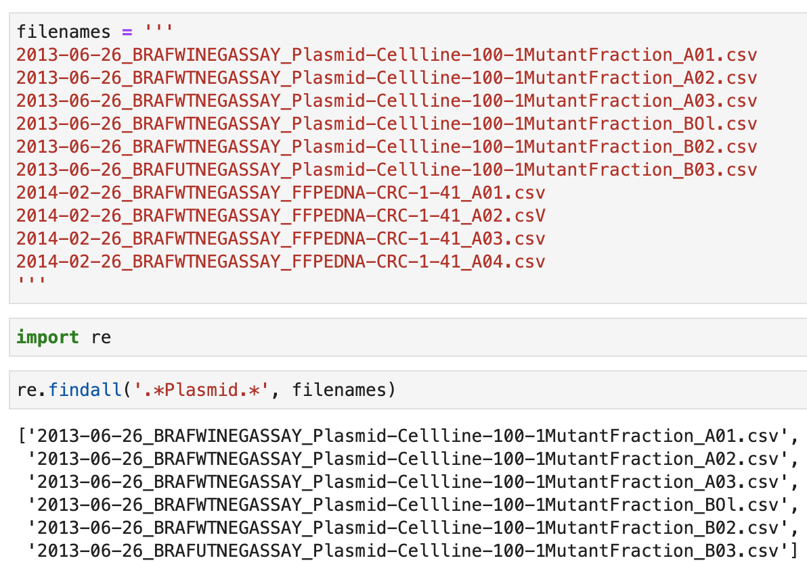

File Names: Best Practices
Examples of bad filenames
my-figure.png
figure1-scatterplot-*-vs-&.png
Figure 1 scatterplot of asterisks vs ampersands.png
Three principles for effective filenames
- Be easy to read and informative to a human
- Be machine-readable
- Play well with default ordering
1. Human-readable filenames
- Name contains info on content
- Connects to the concept of a slug from semantic URLs
Example:
Which set of filenames do you want to see at 3 a.m. before a deadline?

1. Human-readable filenames
An uninformative filename:
my-figure.png
A filename that is not human-readable:
1_scat_len_int.png
An easy to read and informative filename:
fig1_scatterplot-length-vs-interest.png
2. Machine-readable filenames: Special characters and spaces
An ineffective name that contains the special characters * and &:
figure1-scatterplot-*-vs-&.png
An ineffective name that contains spaces:
Figure 1 scatterplot of asterisks vs ampersands.png
A name that is easy to parse for a computer:
fig1_scatterplot-asterisks-vs-ampersands.png
2. Machine-readable filenames: Deliberate use of delimiters
Deliberate use of - and _ allows recovery of metadata from filenames:
_ underscore used to delimit units of metadata we want later- hyphen used to delimit words so reading becomes easier
An ineffective name without delimiters:
Jun6th Figure 1 scatterplot of asterisks vs ampersands.png
A name where metadata fields are separated by _:
fig1_2022-06-20_scatterplot-asterisks-vs-ampersands.png
Consistent use of delimiters for files with similar content:

2. Machine-readable filenames: Pattern matching in the terminal
Files in the directory:

Example: Globbing with lsto narrow file listing:

2. Machine-readable filenames: Pattern matching in the file browser
Example: Using MacOS Finder search

2. Machine-readable filenames: Pattern matching in a programming language
Example: Using regex in Python

3. Works well with default ordering
- Put something numeric first
- Left-pad numbers with zeros or display files in “natural” order
- Use the
YYYY-MM-DD format for dates
Let’s see some examples.
3. Works well with default ordering
Logical order:

3. Works well with default ordering
figure02.png
figure12.png
figure2.png
figure02.png
figure2.png
figure12.png
3. Works well with default ordering
Chronological order:
Always use the YYYY-MM-DD format (that is, the ISO 8601 standard) for dates:

Recap
Remember these three principles for filenames:
- Being machine-readable
- Being human-readable
- Playing well with default ordering
Some more examples of effective filenames:

Let’s apply what we learned!